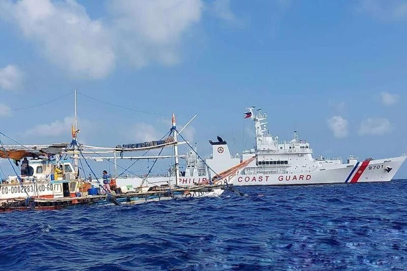
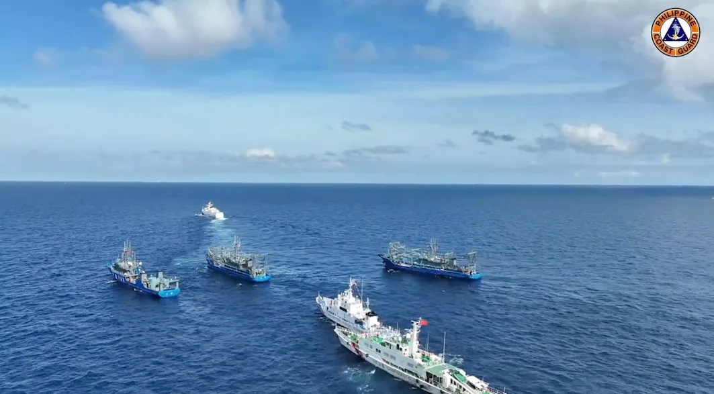

Relations between the Philippines and China, which span several centuries, have been predominantly warm and cordial. But in recent years, both countries have experienced fiery issues that have resulted in their “cooling off,” hitting a low point since the establishment of their diplomatic relations in June 1975. Philippines-China relations have lately been dominated by the territorial disputes in the West Philippine Sea, which has escalated since the naval standoff over the Scarborough Shoal in April 2012 and aggravated by issues of Chinese illegal occupation, unlawful establishment of infrastructures, and incidents of incursions and encroachment within the Philippines exclusive economic zone (EEZ). Bilateral ties took a downturn when the Philippine government filed an arbitration case against China under the United Na-tional Convention on the Law of the Sea (UNCLOS) in January 2013 challenging the legality of China’s nine-dash line claim over the contested waters.
Tourism promotion. China continues to be an important source of tourists for the Philippines. According to the Philippine Depart-ment of Tourism (DOT), over 400,000 Chinese visited the country in 2013. Greater Chinese tourist arrivals look promising as the DOT intensifies tourism promotion in China. As a result of the “It’s More Fun in the Philippines” campaign, the Philippines has be-come a choice destination for Chinese tourists. Sports and cultural exchange. The use of soft power in the form of sports and cultural diplomacy.is deemed necessary in neutralizing the display of hard power by the Philippines and China and in leveling a traditionally asymmetrical relationship between the two countries. Sports and cultural activities have come to contribute increasingly in fostering understanding among Filipinos and Chinese. Former NBA star Yao Ming visited the Philippines for an exhibition game between Philippine and Chinese basketball teams in May 2013. Meanwhile, the Philippine Consulate in Shanghai hosted the “Flavors of the Philippines” in September 2013, a cultural event highlighting Filipino food, traditional music, and folk dance. The continuous organization of sports and cultural initiatives can serve to strengthen people-to-people ties. Media and public opinion. Governments play important role in generating strong national support and in enhancing bilateral ties by improving domestic and international perceptions. For instance, the Department of Foreign Affairs organized the “Chinese Me-dia Familiarization Tour” of the Philippines in August 2013. The event invited members of the Chinese media and acquainted them with Philippine history, politics, and foreign policy with the aim of enabling them to produce more accurate and balanced news about the country. Such an endeavor narrows the large gap in mutual perceptions between the two countries and their citizens. Media exchanges and similar activities can be used to prevent political issues from spilling over to people-to-people relations. The Chinese government can call on its state-controlled media while the Philippine government can encourage its free press to empha-size other positive aspects of the bilateral relations and subsequently counterbalance hostile public perceptions and prevent public tensions from heating up. Ultimately, an enlightened and informed nation—rather than an antagonistically aroused public—can create a more cordial atmosphere for bilateral exchange.
